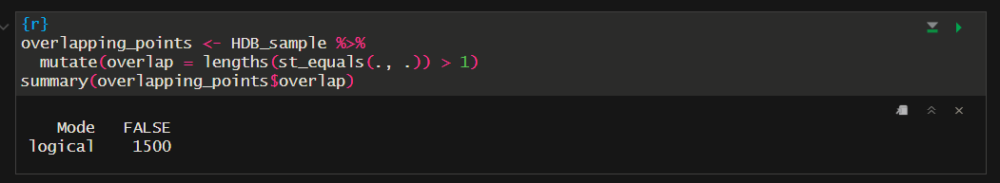
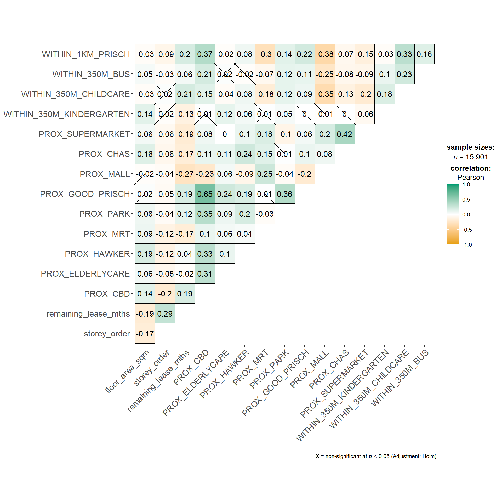
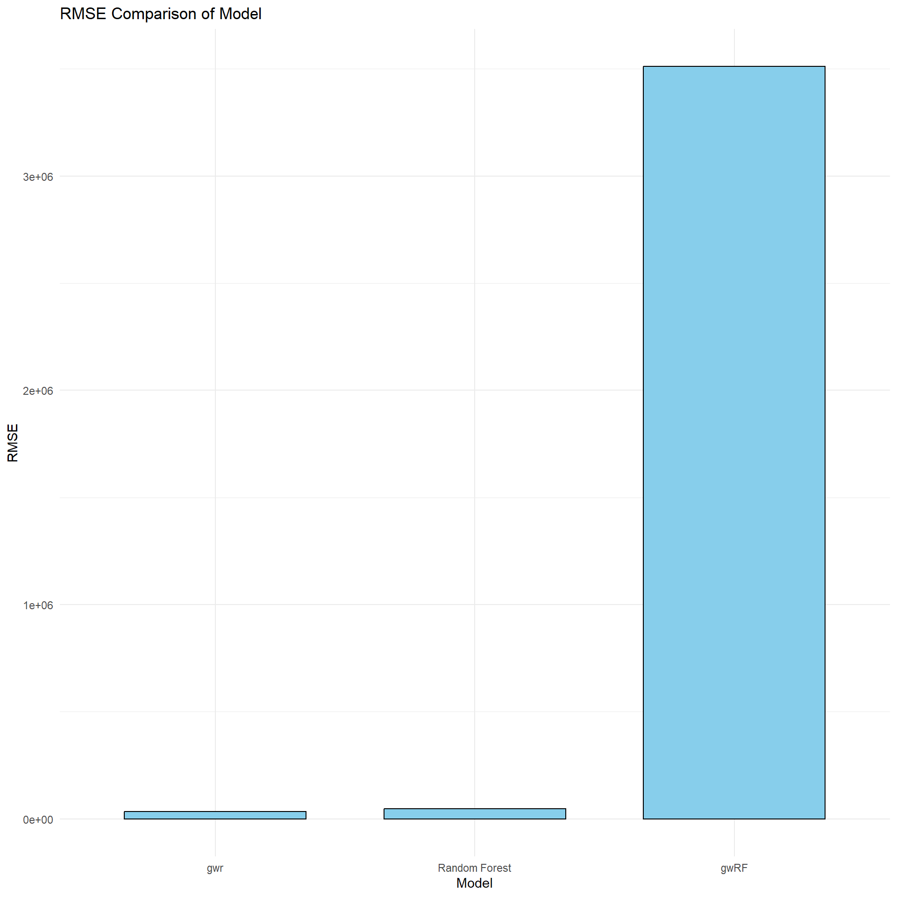
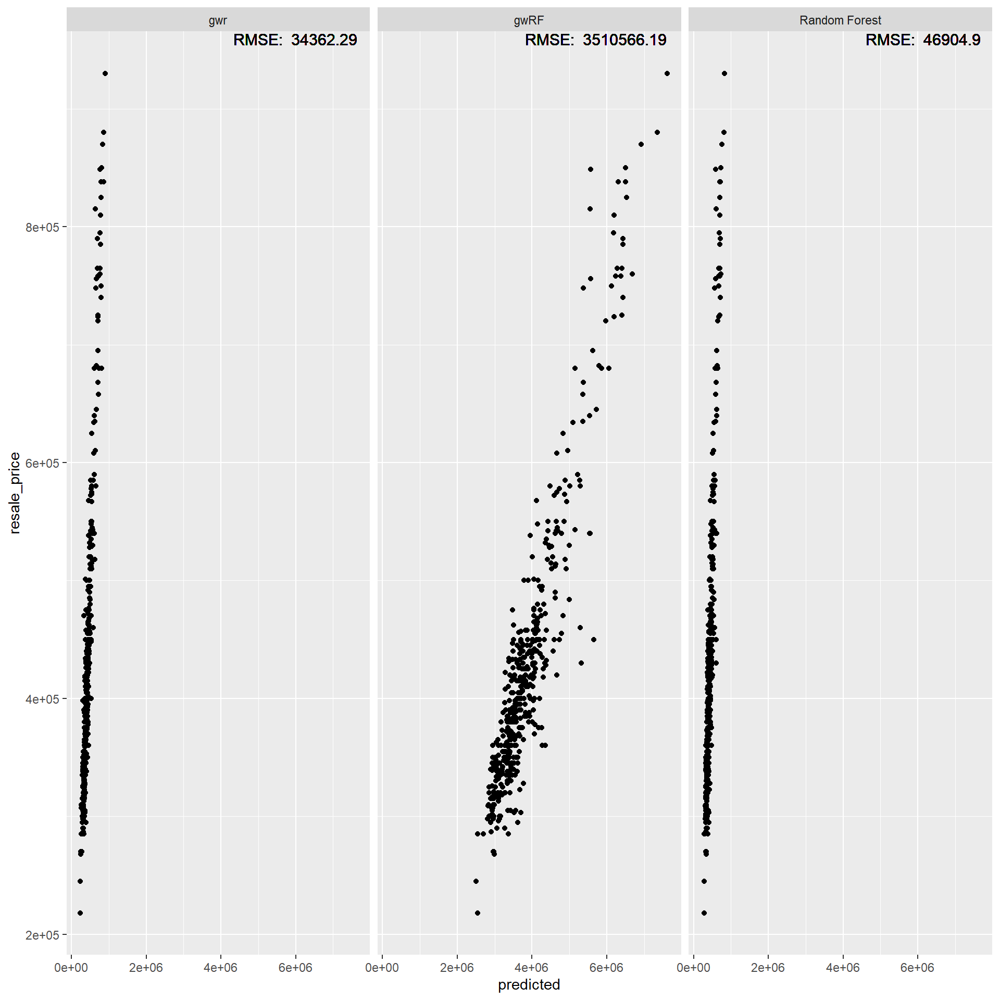
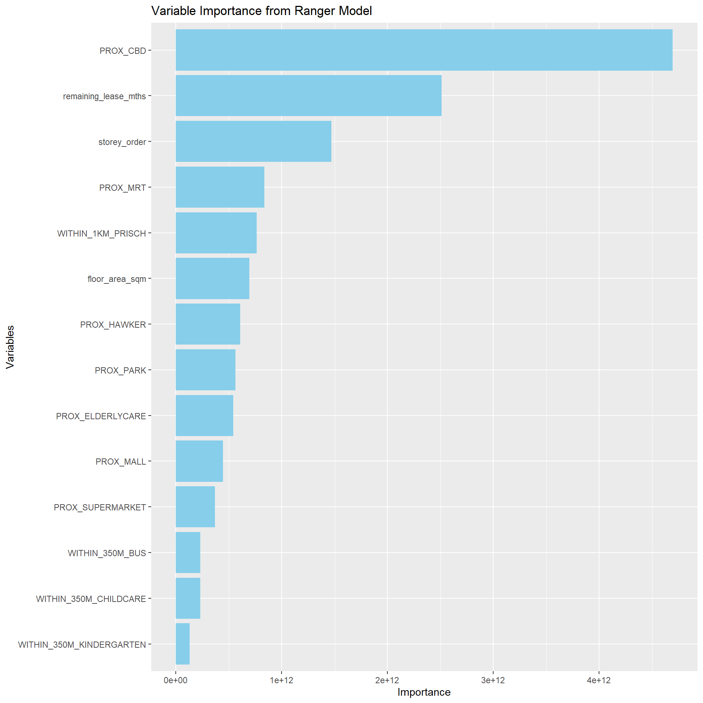

pacman::p_load(sf, spdep, GWmodel, SpatialML, tmap, rsample, yardstick, tidyverse, knitr, kableExtra, spatialRF)In-class Exercise 12: Geographically Weighted Predictive Modelling
Importing Packages
Importing Data
mdata <- read_rds("data/rds/mdata.rds")Preparing Data
Data Sampling
- Calibrating predictive models are computational intensive, especially random forest method is used. For quick prototyping, a 10% sample will be selected at random from the data by using the code chunk below.
set.seed(1234)
HDB_sample <- mdata %>%
sample_n(1500)- Checking of Overlapping points
- Check for overlapping point features
overlapping_points <- HDB_sample %>%
mutate(overlap = lengths(st_equals(., .)) > 1)
summary(overlapping_points$overlap) Mode FALSE TRUE
logical 1047 453 - Spatial Jitter
- st_jitter of sf package to move
HDB_sample <- HDB_sample %>%
st_jitter(amount = 5)
#move by 5 metersAfter performing jitter, run the check overlapping code, will remove all the overlap = true

Data Sampling
Entire data is split into training and test data sets with 65% and 35% respectively by using initial_split() of rsample package. rsample is one of the package of tigymodels.
training: 0.65
test: 0.35
set.seed(1234)
resale_split <- initial_split(HDB_sample,
prop = 6.67/10,)
train_data <- training(resale_split)
test_data <- testing(resale_split)Multicollinearity check
In order to avoid multicollinearity. ggcorrmat() of ggstatsplot is used to plot a correlation matrix to check if there are paris of highly correlated independent variables.
mdata_nogeo <- mdata %>%
st_drop_geometry()
ggstatsplot::ggcorrmat(mdata_nogeo[, 2:17])
Building a non-spatial multiple linear regression
price_mlr <- lm(resale_price ~ floor_area_sqm +
storey_order + remaining_lease_mths +
PROX_CBD + PROX_ELDERLYCARE + PROX_HAWKER +
PROX_MRT + PROX_PARK + PROX_MALL +
PROX_SUPERMARKET + WITHIN_350M_KINDERGARTEN +
WITHIN_350M_CHILDCARE + WITHIN_350M_BUS +
WITHIN_1KM_PRISCH,
data=train_data)Predictive Modelling with gwr
- Computing bw
gwr_bw_train_ad <- bw.gwr(resale_price ~ floor_area_sqm +
storey_order + remaining_lease_mths +
PROX_CBD + PROX_ELDERLYCARE + PROX_HAWKER +
PROX_MRT + PROX_PARK + PROX_MALL +
PROX_SUPERMARKET + WITHIN_350M_KINDERGARTEN +
WITHIN_350M_CHILDCARE + WITHIN_350M_BUS +
WITHIN_1KM_PRISCH,
data=train_data,
approach="CV",
kernel = "gaussian",
adaptive = TRUE,
longlat = FALSE)Adaptive bandwidth: 625 CV score: 3.459032e+12
Adaptive bandwidth: 394 CV score: 3.231786e+12
Adaptive bandwidth: 250 CV score: 2.914736e+12
Adaptive bandwidth: 162 CV score: 2.610897e+12
Adaptive bandwidth: 107 CV score: 2.240188e+12
Adaptive bandwidth: 73 CV score: 1.971641e+12
Adaptive bandwidth: 52 CV score: 1.797271e+12
Adaptive bandwidth: 39 CV score: 1.659472e+12
Adaptive bandwidth: 31 CV score: 1.573963e+12
Adaptive bandwidth: 26 CV score: 1.550147e+12
Adaptive bandwidth: 23 CV score: 1.542544e+12
Adaptive bandwidth: 21 CV score: 1.518885e+12
Adaptive bandwidth: 19 CV score: 1.515965e+12
Adaptive bandwidth: 19 CV score: 1.515965e+12 gwr_bw_train_ad[1] 19We see that the bw value is 19. But in gwr_ad, we round it to 20.
- Model calibration
gwr_ad <- gwr.basic(formula = resale_price ~ floor_area_sqm +
storey_order + remaining_lease_mths +
PROX_CBD + PROX_ELDERLYCARE + PROX_HAWKER +
PROX_MRT + PROX_PARK + PROX_MALL +
PROX_SUPERMARKET + WITHIN_350M_KINDERGARTEN +
WITHIN_350M_CHILDCARE + WITHIN_350M_BUS +
WITHIN_1KM_PRISCH,
data=train_data,
bw= 20,
kernel = "gaussian",
adaptive = TRUE,
longlat = FALSE)- Model Output
- Predicting with test data
gwr_pred <- gwr.predict(formula = resale_price ~ floor_area_sqm +
storey_order + remaining_lease_mths +
PROX_CBD + PROX_ELDERLYCARE + PROX_HAWKER +
PROX_MRT + PROX_PARK + PROX_MALL +
PROX_SUPERMARKET + WITHIN_350M_KINDERGARTEN +
WITHIN_350M_CHILDCARE + WITHIN_350M_BUS +
WITHIN_1KM_PRISCH,
data=train_data,
predictdata = test_data,
bw= 20,
kernel = "gaussian",
adaptive = TRUE,
longlat = FALSE)- Saving predicted values
gwr_pred_df <- as.data.frame(
gwr_pred$SDF$prediction) %>%
rename(gwr_pred = "gwr_pred$SDF$prediction")Predictive Modelling with RF method
- Data Preparation
coords <- st_coordinates(HDB_sample)
coords_train <- st_coordinates(train_data)
coords_test <- st_coordinates(test_data)train_data_nogeom <- train_data %>%
st_drop_geometry()- Calibrating RF model
set.seed(1234)
rf <- ranger(resale_price ~ floor_area_sqm +
storey_order + remaining_lease_mths +
PROX_CBD + PROX_ELDERLYCARE + PROX_HAWKER +
PROX_MRT + PROX_PARK + PROX_MALL +
PROX_SUPERMARKET + WITHIN_350M_KINDERGARTEN +
WITHIN_350M_CHILDCARE + WITHIN_350M_BUS +
WITHIN_1KM_PRISCH,
data=train_data_nogeom)Model Output
Preparing the test data
test_data_nogeom <- cbind(
test_data, coords_test) %>%
st_drop_geometry()- Predicting with rf
#pred the rf model using test_data_nogeom data
rf_pred <- predict(rf,
data = test_data_nogeom)Saving the predicted values
- The output of predict() of ranger is object of class ranger with elements. Code chunk is used to extract values from predictions of predicted classes and save the values in a data frame called rf_pred_df.
rf_pred_df <- as.data.frame(rf_pred$predictions) %>%
rename(rf_pred = "rf_pred$predictions")Predictive Modelling with SpatialML
- Calibrating with grf
set.seed(1234)
grf_ad <- grf(formula = resale_price ~ floor_area_sqm +
storey_order + remaining_lease_mths +
PROX_CBD + PROX_ELDERLYCARE + PROX_HAWKER +
PROX_MRT + PROX_PARK + PROX_MALL +
PROX_SUPERMARKET + WITHIN_350M_KINDERGARTEN +
WITHIN_350M_CHILDCARE + WITHIN_350M_BUS +
WITHIN_1KM_PRISCH,
dframe=train_data_nogeom,
bw=20,
kernel = "adaptive",
coords=coords_train)
Number of Observations: 1000Number of Independent Variables: 14Kernel: Adaptive
Neightbours: 20
--------------- Global ML Model Summary ---------------Ranger result
Call:
ranger(resale_price ~ floor_area_sqm + storey_order + remaining_lease_mths + PROX_CBD + PROX_ELDERLYCARE + PROX_HAWKER + PROX_MRT + PROX_PARK + PROX_MALL + PROX_SUPERMARKET + WITHIN_350M_KINDERGARTEN + WITHIN_350M_CHILDCARE + WITHIN_350M_BUS + WITHIN_1KM_PRISCH, data = train_data_nogeom, num.trees = 500, mtry = 4, importance = "impurity", num.threads = NULL)
Type: Regression
Number of trees: 500
Sample size: 1000
Number of independent variables: 14
Mtry: 4
Target node size: 5
Variable importance mode: impurity
Splitrule: variance
OOB prediction error (MSE): 2056587170
R squared (OOB): 0.8568804
Importance: floor_area_sqm storey_order remaining_lease_mths
6.932661e+11 1.471090e+12 2.512971e+12
PROX_CBD PROX_ELDERLYCARE PROX_HAWKER
4.695331e+12 5.430899e+11 6.061641e+11
PROX_MRT PROX_PARK PROX_MALL
8.355142e+11 5.612980e+11 4.449032e+11
PROX_SUPERMARKET WITHIN_350M_KINDERGARTEN WITHIN_350M_CHILDCARE
3.698543e+11 1.287529e+11 2.290324e+11
WITHIN_350M_BUS WITHIN_1KM_PRISCH
2.310307e+11 7.644464e+11
Mean Square Error (Not OOB): 398120142.153R-squared (Not OOB) %: 97.227AIC (Not OOB): 19832.264AICc (Not OOB): 19832.752
--------------- Local Model Summary ---------------
Residuals OOB: Min. 1st Qu. Median Mean 3rd Qu. Max.
-290000.0 -23542.0 301.7 -1419.2 20628.4 275662.5
Residuals Predicted (Not OOB): Min. 1st Qu. Median Mean 3rd Qu. Max.
-39811.32 -2890.27 0.25 41.71 2914.50 45363.69
Local Variable Importance: Min Max Mean StD
floor_area_sqm 0 93554808148 6579446660 12070756152
storey_order 40825679 175066741478 6798143080 17439613620
remaining_lease_mths 147176404 132323223994 17003264291 27856556164
PROX_CBD 98672979 86998930774 7795275977 12420258631
PROX_ELDERLYCARE 136038143 60602086147 6363805690 9972185105
PROX_HAWKER 89375590 76470252974 5959960036 10069973920
PROX_MRT 141134469 116981909991 7311127365 14402287905
PROX_PARK 173527329 91563243055 6282954230 12004019497
PROX_MALL 136045951 111744007681 8082912771 14856365039
PROX_SUPERMARKET 117381309 67560243432 5118831575 8420630833
WITHIN_350M_KINDERGARTEN 0 43638703821 1704409355 3939462279
WITHIN_350M_CHILDCARE 24644933 114970847915 4291790153 10498357427
WITHIN_350M_BUS 45643896 81035956654 3244648284 6333435620
WITHIN_1KM_PRISCH 0 29773426249 1919719438 3594705849
Mean squared error (OOB): 2776322474.986R-squared (OOB) %: 80.66AIC (OOB): 21774.393AICc (OOB): 21774.881Mean squared error Predicted (Not OOB): 56975707.952R-squared Predicted (Not OOB) %: 99.603AIC Predicted (Not OOB): 17888.136AICc Predicted (Not OOB): 17888.623
Calculation time (in seconds): 19.5544- Predicting with the test data
grf_pred <- predict.grf(grf_ad,
test_data_nogeom,
x.var.name="X",
y.var.name = "Y",
local.w = 1,
global.w=8)- Save the predicted values
grf_pred_df <- as.data.frame(grf_pred)Model Comparison
- Combining model’s output
test_data_pred <- test_data %>%
select(resale_price) %>%
cbind(gwr_pred_df) %>%
cbind(rf_pred_df) %>%
cbind(grf_pred_df)Transposing data
in test_data_pred,
drop geometry column first
those columns ending with _pred, will combine all 3 columns to one column (called model) and its values to another column (called predicted), from 500 rows -> 1500 rows.
test_longer <- test_data_pred %>%
st_drop_geometry() %>%
pivot_longer(cols = ends_with("pred"),
names_to = "model",
values_to = "predicted")- Renaming
model_labels <- c(
gwr_pred = "gwr",
rf_pred = "Random Forest",
grf_pred = "gwRF")
test_longer <- test_longer %>%
mutate(model = recode(model, !!!model_labels))- Computing RMSE
rmse_results <- test_longer %>%
group_by(model) %>%
rmse(truth = resale_price,
estimate = predicted) %>%
rename(rmse = .estimate) %>%
select(model, rmse)Model Comparison Plots
- Bar chart
ggplot(rmse_results,
aes(x = reorder(model, rmse),
y=rmse,
fill = "skyblue")) +
geom_bar(stat = "identity",
fill = "skyblue",
color = "black",
width = 0.7) +
labs(title = "RMSE Comparison of Model",
y = "RMSE",
x = "Model") +
theme_minimal()
- Scatter Plots
test_longer <- test_longer %>%
left_join(rmse_results,
by = "model")
ggplot(data = test_longer,
aes(x = predicted,
y = resale_price)) +
facet_wrap(~ model) +
geom_point() +
geom_text(data = test_longer,
aes(x = Inf, y = Inf,
label = paste("RMSE: ", round(rmse,2))),
hjust = 1.1, vjust = 1.1,
color = "black", size = 4)
Variable Importance
var_imp <- data.frame(
Variable = names(grf_ad$Global.Model$variable.importance),
Importance = grf_ad$Global.Model$variable.importance
)- Plotting
ggplot(var_imp, aes(x = reorder(Variable,
Importance),
y = Importance)) +
geom_bar(stat = "identity",
fill = "skyblue") +
coord_flip() +
labs(
title = "Variable Importance from Ranger Model",
x = "Variables",
y = "Importance"
)
theme_minimal()List of 136
$ line :List of 6
..$ colour : chr "black"
..$ linewidth : num 0.5
..$ linetype : num 1
..$ lineend : chr "butt"
..$ arrow : logi FALSE
..$ inherit.blank: logi TRUE
..- attr(*, "class")= chr [1:2] "element_line" "element"
$ rect :List of 5
..$ fill : chr "white"
..$ colour : chr "black"
..$ linewidth : num 0.5
..$ linetype : num 1
..$ inherit.blank: logi TRUE
..- attr(*, "class")= chr [1:2] "element_rect" "element"
$ text :List of 11
..$ family : chr ""
..$ face : chr "plain"
..$ colour : chr "black"
..$ size : num 11
..$ hjust : num 0.5
..$ vjust : num 0.5
..$ angle : num 0
..$ lineheight : num 0.9
..$ margin : 'margin' num [1:4] 0points 0points 0points 0points
.. ..- attr(*, "unit")= int 8
..$ debug : logi FALSE
..$ inherit.blank: logi TRUE
..- attr(*, "class")= chr [1:2] "element_text" "element"
$ title : NULL
$ aspect.ratio : NULL
$ axis.title : NULL
$ axis.title.x :List of 11
..$ family : NULL
..$ face : NULL
..$ colour : NULL
..$ size : NULL
..$ hjust : NULL
..$ vjust : num 1
..$ angle : NULL
..$ lineheight : NULL
..$ margin : 'margin' num [1:4] 2.75points 0points 0points 0points
.. ..- attr(*, "unit")= int 8
..$ debug : NULL
..$ inherit.blank: logi TRUE
..- attr(*, "class")= chr [1:2] "element_text" "element"
$ axis.title.x.top :List of 11
..$ family : NULL
..$ face : NULL
..$ colour : NULL
..$ size : NULL
..$ hjust : NULL
..$ vjust : num 0
..$ angle : NULL
..$ lineheight : NULL
..$ margin : 'margin' num [1:4] 0points 0points 2.75points 0points
.. ..- attr(*, "unit")= int 8
..$ debug : NULL
..$ inherit.blank: logi TRUE
..- attr(*, "class")= chr [1:2] "element_text" "element"
$ axis.title.x.bottom : NULL
$ axis.title.y :List of 11
..$ family : NULL
..$ face : NULL
..$ colour : NULL
..$ size : NULL
..$ hjust : NULL
..$ vjust : num 1
..$ angle : num 90
..$ lineheight : NULL
..$ margin : 'margin' num [1:4] 0points 2.75points 0points 0points
.. ..- attr(*, "unit")= int 8
..$ debug : NULL
..$ inherit.blank: logi TRUE
..- attr(*, "class")= chr [1:2] "element_text" "element"
$ axis.title.y.left : NULL
$ axis.title.y.right :List of 11
..$ family : NULL
..$ face : NULL
..$ colour : NULL
..$ size : NULL
..$ hjust : NULL
..$ vjust : num 1
..$ angle : num -90
..$ lineheight : NULL
..$ margin : 'margin' num [1:4] 0points 0points 0points 2.75points
.. ..- attr(*, "unit")= int 8
..$ debug : NULL
..$ inherit.blank: logi TRUE
..- attr(*, "class")= chr [1:2] "element_text" "element"
$ axis.text :List of 11
..$ family : NULL
..$ face : NULL
..$ colour : chr "grey30"
..$ size : 'rel' num 0.8
..$ hjust : NULL
..$ vjust : NULL
..$ angle : NULL
..$ lineheight : NULL
..$ margin : NULL
..$ debug : NULL
..$ inherit.blank: logi TRUE
..- attr(*, "class")= chr [1:2] "element_text" "element"
$ axis.text.x :List of 11
..$ family : NULL
..$ face : NULL
..$ colour : NULL
..$ size : NULL
..$ hjust : NULL
..$ vjust : num 1
..$ angle : NULL
..$ lineheight : NULL
..$ margin : 'margin' num [1:4] 2.2points 0points 0points 0points
.. ..- attr(*, "unit")= int 8
..$ debug : NULL
..$ inherit.blank: logi TRUE
..- attr(*, "class")= chr [1:2] "element_text" "element"
$ axis.text.x.top :List of 11
..$ family : NULL
..$ face : NULL
..$ colour : NULL
..$ size : NULL
..$ hjust : NULL
..$ vjust : num 0
..$ angle : NULL
..$ lineheight : NULL
..$ margin : 'margin' num [1:4] 0points 0points 2.2points 0points
.. ..- attr(*, "unit")= int 8
..$ debug : NULL
..$ inherit.blank: logi TRUE
..- attr(*, "class")= chr [1:2] "element_text" "element"
$ axis.text.x.bottom : NULL
$ axis.text.y :List of 11
..$ family : NULL
..$ face : NULL
..$ colour : NULL
..$ size : NULL
..$ hjust : num 1
..$ vjust : NULL
..$ angle : NULL
..$ lineheight : NULL
..$ margin : 'margin' num [1:4] 0points 2.2points 0points 0points
.. ..- attr(*, "unit")= int 8
..$ debug : NULL
..$ inherit.blank: logi TRUE
..- attr(*, "class")= chr [1:2] "element_text" "element"
$ axis.text.y.left : NULL
$ axis.text.y.right :List of 11
..$ family : NULL
..$ face : NULL
..$ colour : NULL
..$ size : NULL
..$ hjust : num 0
..$ vjust : NULL
..$ angle : NULL
..$ lineheight : NULL
..$ margin : 'margin' num [1:4] 0points 0points 0points 2.2points
.. ..- attr(*, "unit")= int 8
..$ debug : NULL
..$ inherit.blank: logi TRUE
..- attr(*, "class")= chr [1:2] "element_text" "element"
$ axis.text.theta : NULL
$ axis.text.r :List of 11
..$ family : NULL
..$ face : NULL
..$ colour : NULL
..$ size : NULL
..$ hjust : num 0.5
..$ vjust : NULL
..$ angle : NULL
..$ lineheight : NULL
..$ margin : 'margin' num [1:4] 0points 2.2points 0points 2.2points
.. ..- attr(*, "unit")= int 8
..$ debug : NULL
..$ inherit.blank: logi TRUE
..- attr(*, "class")= chr [1:2] "element_text" "element"
$ axis.ticks : list()
..- attr(*, "class")= chr [1:2] "element_blank" "element"
$ axis.ticks.x : NULL
$ axis.ticks.x.top : NULL
$ axis.ticks.x.bottom : NULL
$ axis.ticks.y : NULL
$ axis.ticks.y.left : NULL
$ axis.ticks.y.right : NULL
$ axis.ticks.theta : NULL
$ axis.ticks.r : NULL
$ axis.minor.ticks.x.top : NULL
$ axis.minor.ticks.x.bottom : NULL
$ axis.minor.ticks.y.left : NULL
$ axis.minor.ticks.y.right : NULL
$ axis.minor.ticks.theta : NULL
$ axis.minor.ticks.r : NULL
$ axis.ticks.length : 'simpleUnit' num 2.75points
..- attr(*, "unit")= int 8
$ axis.ticks.length.x : NULL
$ axis.ticks.length.x.top : NULL
$ axis.ticks.length.x.bottom : NULL
$ axis.ticks.length.y : NULL
$ axis.ticks.length.y.left : NULL
$ axis.ticks.length.y.right : NULL
$ axis.ticks.length.theta : NULL
$ axis.ticks.length.r : NULL
$ axis.minor.ticks.length : 'rel' num 0.75
$ axis.minor.ticks.length.x : NULL
$ axis.minor.ticks.length.x.top : NULL
$ axis.minor.ticks.length.x.bottom: NULL
$ axis.minor.ticks.length.y : NULL
$ axis.minor.ticks.length.y.left : NULL
$ axis.minor.ticks.length.y.right : NULL
$ axis.minor.ticks.length.theta : NULL
$ axis.minor.ticks.length.r : NULL
$ axis.line : list()
..- attr(*, "class")= chr [1:2] "element_blank" "element"
$ axis.line.x : NULL
$ axis.line.x.top : NULL
$ axis.line.x.bottom : NULL
$ axis.line.y : NULL
$ axis.line.y.left : NULL
$ axis.line.y.right : NULL
$ axis.line.theta : NULL
$ axis.line.r : NULL
$ legend.background : list()
..- attr(*, "class")= chr [1:2] "element_blank" "element"
$ legend.margin : 'margin' num [1:4] 5.5points 5.5points 5.5points 5.5points
..- attr(*, "unit")= int 8
$ legend.spacing : 'simpleUnit' num 11points
..- attr(*, "unit")= int 8
$ legend.spacing.x : NULL
$ legend.spacing.y : NULL
$ legend.key : list()
..- attr(*, "class")= chr [1:2] "element_blank" "element"
$ legend.key.size : 'simpleUnit' num 1.2lines
..- attr(*, "unit")= int 3
$ legend.key.height : NULL
$ legend.key.width : NULL
$ legend.key.spacing : 'simpleUnit' num 5.5points
..- attr(*, "unit")= int 8
$ legend.key.spacing.x : NULL
$ legend.key.spacing.y : NULL
$ legend.frame : NULL
$ legend.ticks : NULL
$ legend.ticks.length : 'rel' num 0.2
$ legend.axis.line : NULL
$ legend.text :List of 11
..$ family : NULL
..$ face : NULL
..$ colour : NULL
..$ size : 'rel' num 0.8
..$ hjust : NULL
..$ vjust : NULL
..$ angle : NULL
..$ lineheight : NULL
..$ margin : NULL
..$ debug : NULL
..$ inherit.blank: logi TRUE
..- attr(*, "class")= chr [1:2] "element_text" "element"
$ legend.text.position : NULL
$ legend.title :List of 11
..$ family : NULL
..$ face : NULL
..$ colour : NULL
..$ size : NULL
..$ hjust : num 0
..$ vjust : NULL
..$ angle : NULL
..$ lineheight : NULL
..$ margin : NULL
..$ debug : NULL
..$ inherit.blank: logi TRUE
..- attr(*, "class")= chr [1:2] "element_text" "element"
$ legend.title.position : NULL
$ legend.position : chr "right"
$ legend.position.inside : NULL
$ legend.direction : NULL
$ legend.byrow : NULL
$ legend.justification : chr "center"
$ legend.justification.top : NULL
$ legend.justification.bottom : NULL
$ legend.justification.left : NULL
$ legend.justification.right : NULL
$ legend.justification.inside : NULL
$ legend.location : NULL
$ legend.box : NULL
$ legend.box.just : NULL
$ legend.box.margin : 'margin' num [1:4] 0cm 0cm 0cm 0cm
..- attr(*, "unit")= int 1
$ legend.box.background : list()
..- attr(*, "class")= chr [1:2] "element_blank" "element"
$ legend.box.spacing : 'simpleUnit' num 11points
..- attr(*, "unit")= int 8
[list output truncated]
- attr(*, "class")= chr [1:2] "theme" "gg"
- attr(*, "complete")= logi TRUE
- attr(*, "validate")= logi TRUE